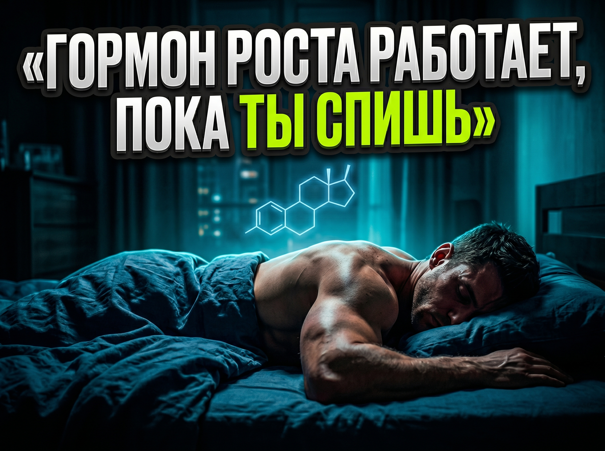

Гормон роста: как он работает и когда реально выделяется

Про гормон роста написано много ерунды, и разобраться, где правда, а где мифы, реально сложно. Его подают то как сжигатель жира, то как средство от старения, то как причину, по которой подростки растут, а взрослые уже нет. И почти всегда вывод один: надо как-то поднять гормон роста, и тогда тело начнёт меняться быстрее. На деле всё спокойнее.
Гормон роста отвечает не за быстрое похудение, а за ремонт и обслуживание тканей: мышцы, связки, кости, кожа. Выделяется он не ровной линией, а толчками. И самый крупный толчок у большинства людей происходит ночью, в первые часы сна. С этого факта и начинаются неудобные выводы.
Что он делает в теле
Если упростить, гормон роста помогает телу чинить и поддерживать само себя. Он влияет на то, как организм использует жир как топливо, но это не значит, что ты поднял его уровень и сразу начал худеть. Это значит, что при определённых условиях телу чуть проще опираться на жирные кислоты, особенно когда задача не выжать максимум на тренировке, а восстановиться.
Важно понимать, что гормон роста почти никогда не действует сам по себе. Он завязан на инсулин, кортизол, гормоны щитовидки и половые гормоны. И ещё на самый скучный фактор, про который никто не хочет слышать: сколько ты ешь и сколько в этом белка. Если питание развалено и сна нет, поднимать гормон роста бессмысленно.
Когда он выделяется
Главный выброс у большинства людей идёт ночью и связан с глубокой фазой сна. Обычно это первые 1–3 часа после засыпания, если сон нормальный по качеству. Дальше ночью идут толчки поменьше, и небольшие выбросы возможны днём, но ночной пик остаётся главным.
Поэтому попытки добрать гормон роста вечерними тренировками, сауной и кардио натощак часто упираются в один вопрос: ты после этого спишь глубоко или ворочаешься с бешеным сердцем? Если ты разогнал нервную систему стимуляторами и поздней нагрузкой, а потом час не можешь уснуть, ты сам перекрыл то, ради чего всё затевал.
Откуда взялся страх углеводов вечером
Да, высокий инсулин может снижать выброс гормона роста. На этом построены страшилки в духе того, что углеводы вечером убивают весь ночной эффект. Проблема в том, что жизнь сложнее одной реакции. Если ты лёг голодный, злой и недоспавший, держась на кофе и силе воли, гормон роста тебя не спасёт, потому что ты просто не восстанавливаешься.
Нормальный ужин сам по себе не враг. Для многих людей он наоборот улучшает сон, особенно если есть белок и часть углеводов, которые помогают расслабиться. А качественный сон обычно даёт гормональному фону больше, чем попытка не поднять инсулин ценой бессонной ночи. Правильный вопрос не в том, можно ли углеводы вечером, а в том, как сделать сон глубоким и стабильным.
Тренировки и гормон роста
Тяжёлая тренировка с нормальным объёмом действительно может повышать гормон роста. Но это побочный эффект адекватной работы, а не цель. Ты строишь программу не ради гормонального ответа, а ради прогресса в нагрузках, сохранения мышц на дефиците и нормальной формы. Гормоны под это подстраиваются сами.
Если же постоянно жать газ ради выброса гормонов, легко уехать в хронический стресс: кортизол высокий, сон рваный, аппетит скачет, восстановление проваливается. И тогда человек идёт искать ещё одну добавку или ещё один приём, хотя на самом деле ему нужен тормоз.
Частая картина: человек работает допоздна, тренируется поздно вечером, потом ради гормона роста не ужинает и с утра делает кардио натощак. Через 2 недели он выжатый, спит поверхностно, вес стоит, рабочие веса не растут, а голова в тумане целый день. Когда мы делаем скучные изменения, которые никто не хочет, но всем они нужны, результат возвращается. Переносим силовую на пораньше или снижаем вечернюю интенсивность. Добавляем нормальный ужин. Ставим цель не добрать гормон роста, а спать 7,5–8 часов и просыпаться без ощущения, что тебя всю ночь возили. И у человека снова появляются силы тренироваться, держать питание и двигаться вперёд.
Что делать прямо сейчас
- Налади сон: 7–9 часов, стабильный подъём, меньше экранов и стимуляторов вечером. Это база, без которой ночной пик гормона роста просто не случится как надо.
- Тренируйся так, чтобы успевать восстанавливаться: Тяжело это нормально, но тяжело каждый день плюс недосып плюс жёсткий дефицит это уже способ загнать себя.
- Сначала собери базу: Белок, шаги, силовые и адекватный дефицит, и только потом думай про тонкие настройки.
- Хочешь усилить ночной выброс: Начни с того, чтобы быстро засыпать и спать глубоко, а не с кардио натощак.
Результат дают сон, питание и нагрузка, которую ты реально выдержишь не 5 дней, а 5 месяцев. Гормон роста это часть системы обслуживания тела, и работает она тогда, когда ты даёшь ей нормально спать и восстанавливаться.
Метафитнес
Больше прикладной механики тренировок и разборов питания без воды в моем Telegram канале.